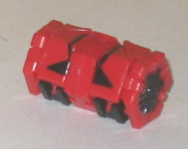
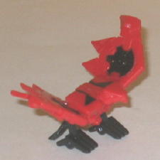
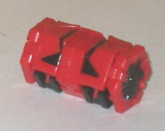
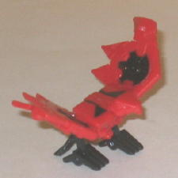
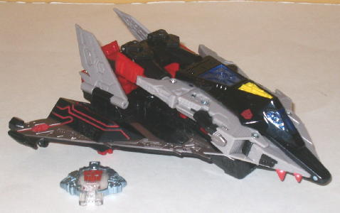
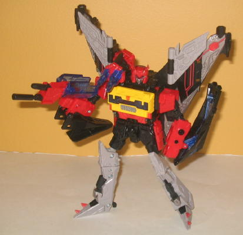

 
Allegiance : Autobot
Size : Mini-Con
Difficulty of Transformation : Very Easy
Color Scheme : Red and black
Individual Rating : 7.9
(NOTE: Because this set is a repaint, this
is not a full-blown review. This mainly covers any changes made to the
set and the color scheme, and merely compares it to Cybertron Soundwave
w/ Laserbeak. For a review on the mold itself, read the review of Cybertron
Soundwave w/ Laserbeak
here
.)
 Blockrock
Blockrock


Allegiance
: Autobot
Size
: Mini-Con
Difficulty of Transformation
: Very
Easy
Color Scheme
: Red and black
Individual Rating
: 7.9
Blockrock's colors are
essentially the same as Cybertron Laserbeak's, just inverted. He's still
red and black, just now with much more red than black. Red doesn't really
serve this type of bird quite as well as black, though it's hardly a bad
color scheme by any means. In Blockrock's favor, he does have more noticeable
paint apps than Laserbeak-- I like how both the tops of his wing-turbines
and a some neat detailing is painted on his back (though the downside to
this is that the bird optics aren't painted). It helps break up his red
a bit more than it otherwise would have.
No mold changes have
been made to Blockrock.
 Autobot
Blaster
Autobot
Blaster


Allegiance
: Autobot
Size
: Voyager
Series
: Classic/Generation One
Difficulty of Transformation
: Hard
Color Scheme
: Black, red, and some
transparent blue, yellow, metallic gunmetal gray, moderately light gray,
silver, and dull orangish yellow
Individual Rating
: 8.8
Blaster here is a repaint
homage to the G1 character of the same name who, like
G1
Soundwave
, transformed into a tape player. Hasbro decided to roll with
it and repaint CYBERTRON Soundwave into Blaster, given their similar tape
deck-esque chests. Taken by itself, Blaster here is a fantastic repaint.
The black goes very well on a stealth bomber-- much moreso than Soundwave's
blue-- and the red works as a dynamite secondary color, providing some
excellent contrast. I particularly like the red "circuitry line" paint
apps on the wings in vehicle mode-- those look amazing. The gray/silver
serves as a decent enough secondary color, though the plastic color itself
is a little bland. The painted-on silver/gunmetal gray on parts such as
the wings looks much better than the plastic on the legs, for example.
Blaster also has tons of paint apps, particularly visible in vehicle mode,
where almost his entire wings are painted. He could have used a few more
paint apps on his arms in robot mode, but that's about the only major part
of him that's particularly barren. Blue is used on his transparent parts,
and there's a touch of yellow used on his body as well, both hearkening
back to his G1 self-- both fit in fairly well in the small amounts they're
used. As an homage, though, Blaster just doesn't work. I like that they
weren't slavish with the color scheme and flipped the amounts of red and
black on the figure compared to G1 Blaster-- let's face it, a mostly red
stealth bomber would look horrible-- but it still looks waaay too much
like Soundwave without at least a head remold. Plus, the mold was just
made to look evil, and no matter what colors you put on it or how many
Autobot insignias you stamp on it, it still looks like a Decepticon.
No mold changes have
been made to Universe 2.0 Blaster.
Universe 2.0 Blaster is a great repaint-- much better than Cybertron Soundwave, at least when it comes to his overall color scheme. The colors just contrast so nicely against each other. However, if you're wanted a "new Blaster", this repaint just doesn't fit the bill-- it looks way, way too much like Soundwave, whose head is too iconic to easily pass as someone else. If you can deal with that and just want to pretend he's some random Autobot named Blaster who has no connection to the G1 character, than by all means pick him up-- otherwise, you may want to stick with Cybertron Soundwave.
Review by Beastbot
(NOTE: On Blaster's bio, Blockrock is mistakenly named Flashback, likely an early name for the Minicon. I automatically corrected it in the bio above, hence the brackets.)